| 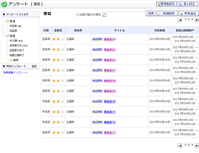 |
アンケート[受信]
アンケート[受信]の一覧画面です。 |
|---|---|
| 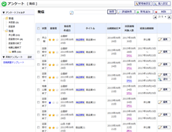 |
アンケート[発信]
アンケート[発信]の一覧画面です。 |
| 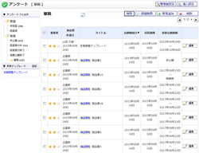 |
アンケート[草稿]
アンケート[草稿]の一覧画面です。 |
| 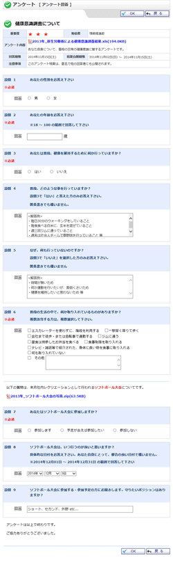 |
回答
・
回答確認
・
回答済アンケート確認
アンケート回答画面です。 |
 |
アンケート プレビュー
・
アンケート プレビュー(共有テンプレート)
アンケートプレビュー画面です。 |
 |
新規作成
・
編集
・
共有テンプレート新規作成
・
共有テンプレート編集
・
草稿
アンケート作成画面です。 |
| 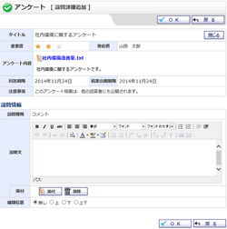 |
設問追加 単一選択
・
複数選択
・
テキスト入力
・
テキスト入力(複数行)
・
数値入力
・
日付入力
・
コメント
アンケートの各種設問を追加・編集します。 |
| 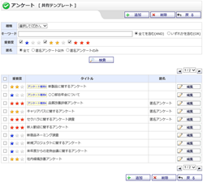 |
共有テンプレート
共有テンプレートの一覧画面です。 |
| 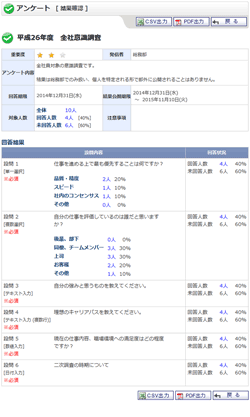 |
結果確認
結果確認画面です。 |
 |
結果確認（一覧）
結果確認（一覧）画面です。 |
| 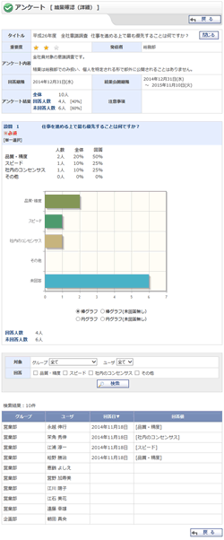 |
結果確認（詳細） 単一選択
・
複数選択
・
テキスト入力
・
テキスト入力(複数行)
・
数値入力
・
日付入力
結果確認（詳細）画面です。 |
| 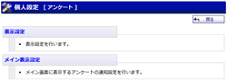 |
個人設定
アンケート個人設定のメニュー画面です。 |
| 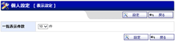 |
表示設定（個人設定）
各ユーザのアンケート表示に関する設定を行います。 |
| 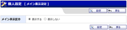 |
メイン表示設定（個人設定）
メイン画面に表示する、未回答アンケートの通知設定を行います。 |
 |
管理者設定
アンケート管理者設定のメニュー画面です。 |
 |
アンケート発信対象者設定
・
確認
アンケートを発信できるユーザーの管理を行う画面です。 |
 |
アンケート種類設定
・
確認
アンケート種類の管理を行う画面です。 |
| 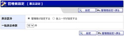 |
表示設定（管理者設定）
全ユーザのアンケート表示に関する設定を行います。 |
| 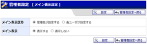 |
メイン表示設定（管理者設定）
全ユーザのメイン画面に表示する、未回答アンケートの通知設定を行います。 |
| 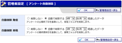 |
アンケート自動削除
・
確認
アンケートデータ自動削除の設定を行います。 |
| 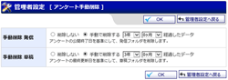 |
アンケート手動削除
・
確認
アンケートデータの手動削除を行います。 |
| 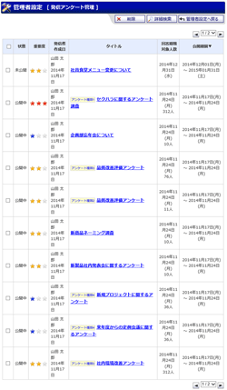 |
発信アンケート管理
発信アンケートの管理を行います。 |